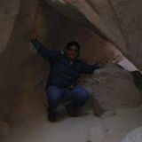

Below is some information about the contributers to this project.
Franz Chavez

Joshua Ashinhurst

Carlos Rubio

Insert what Carlos Did:
If interested, his personal website can be found here.Below is some information about the contributers to this project.